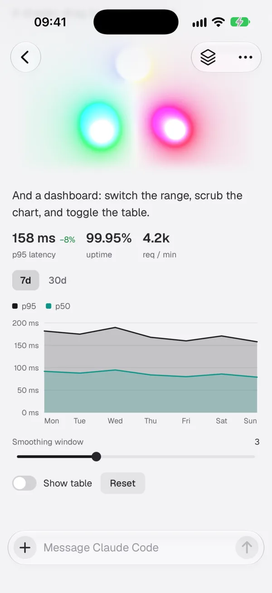

Commutator runs the Claude Code, Codex or Cursor you already have on your own machines, and lets you open any of their chats from the desktop or your phone. No VPN, no terminal, no extra tokens.
macOS on Apple silicon, Linux servers, iPhone and Android. Open source, MIT.
The agent stays the one you chose, with your plan, your logins and your config. Commutator changes how you reach it: structured, native, from any device.
Commutator talks to agents over ACP and Claude Code’s and Codex’s own protocols, so every turn arrives as structure: reasoning, tool calls, diffs, questions with buttons. No ANSI noise, no TUI squeezed onto a phone screen.
Each machine and each phone connects out to the relay and finds the others through your Google account. It works from any network, with nothing to forward and no SSH keys to carry around.
It runs the very Claude Code or Codex you’d run in a terminal, on the plan you already pay for. No wrapper model and no extra requests: a turn costs what it costs in the TUI.
No web view anywhere. The desktop is drawn on the GPU with GPUI, Zed’s framework; the phones are UIKit and Compose over a shared Rust core that lays out the transcript. A chat hundreds of turns long scrolls as smoothly as a short one.
The engine runs as a background service, on a Mac at home or a Linux server. Start a task at your desk and follow it from the train; your phone gets a push when it finishes or needs you.
Agents and repositories never leave your machines; the server only signs devices in and relays between them. Run your own and point commutator login at it.
Read what it changed, tell it what to fix, check the pull request, look at the page it built. The loop stays next to the chat instead of across five apps.
See what each turn changed, split or unified. Leave a comment on a line and it goes to the agent with your next message: code review, for an agent.
Every pull request of the repos you work in, on one page, each with its description, checks and code. A chat’s branch shows its PR in the sidebar.
The dev server the agent started opens beside it. Soon: circle a spot on the page, write what’s wrong and send it to the agent.
Prompts on a schedule, on the machine you pick. Each run becomes its own chat, so you read it like any other.
Commutator for iPhone and Android opens any chat on any of your machines, as one list or by project with its worktrees: read the transcript as it streams, answer the agent’s questions, start a new chat in a project, open its terminal. No agent runs on the phone; it drives the machine’s.



The desktop app for the Mac, the engine for Linux servers, and the phone apps that reach both.
Apple silicon. Signed and notarized, so Gatekeeper opens it without a prompt. Open the dmg and drag Commutator to Applications.
The engine without a window, for a server or a build box. Add a server in the desktop app gives a one-line install with a pair code; it runs as a systemd user service. On a Mac, commutator daemon install keeps the engine running without the window.
Sign in with the same Google account and pick a machine. Chats, questions, new sessions and terminals, with a push when an agent finishes or needs you.